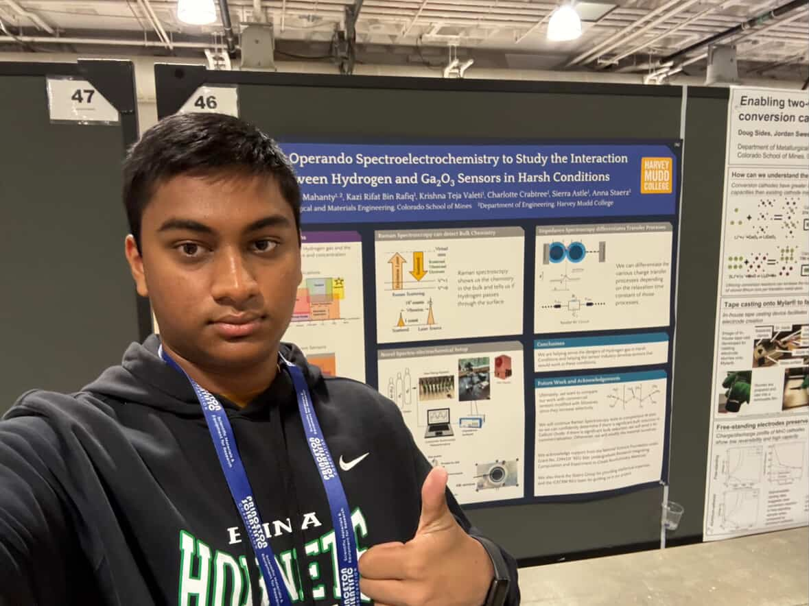

// What I've Researched
I am currently a student researcher at the Machine Learning and Autonomy for Diverse Domains (MADD) Lab at Harvey Mudd College. I work with integrating and optimizing Machine Learning models on an NVIDIA Jetson Orin platform for real-time computer vision applications for wildfire detections. My work includes implementing these models, benchmarking their performance, and optimizing them for low-latency inference. I also plan to dabble a little into drone communication networks and potentially Ultra-Wide Band (UWB) localization techniques.
Last Summer, I was a Research Experience for Undergraduates (REU) intern at the Colorado School of Mines in the Materials Science and Engineering division under Professor Anna Staerz. I worked with developing a Gallium Oxide Hydrogen sensor in harsh conditions. This project grew my skills in mechanical design, electrical setups, and Operando Spectroelectrochemistry (fancy way of saying "monitoring and analyzing spectroscopic device output in real-time").
# I presented my work at the Colorado School of Mines, Harvey Mudd College, and an international
# conference (see above): The Materials Research Society (MRS) Fall 2025 Meeting, in Boston, MA.
My previous research includes working as a student researcher and project manager as part of the Degrees of Freedom Project (DOFPro) under Prof. Erik Spjut. I created and updated open-source educational software resources for HMC Engineering classes. I also built and test a 55m dual-deploy rocket that earned me NAR Level 1 Certification!